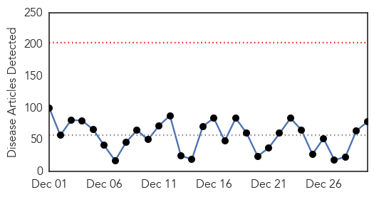
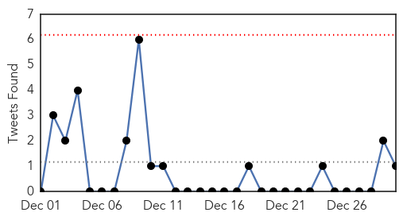
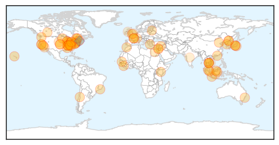
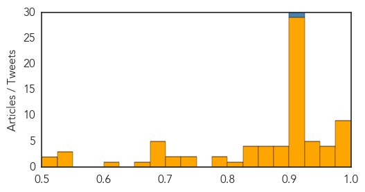
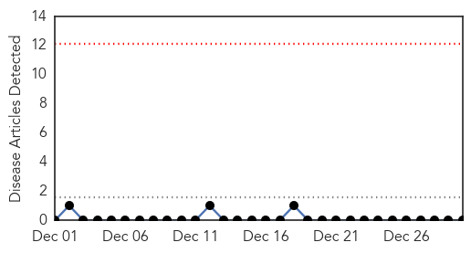

Unknown
30-Day Web Trend
0 alerts, 0 warnings

30-Day Twitter Trend
0 alerts, 0 warnings

Article Locations
Article Confidences
Top Articles:
- 0.998
- Blount Memorial Hospital takes precautions against flu
- 0.997
- Flu outbreak now labeled an 'epidemic' as deaths mount
- 0.996
- Hospitals Restricting Visitors As Flu Spreads To Epidemic
- 0.996
- Local hospitals seeing big influx in flu patients
- 0.992
- Tuscaloosa health officials reporting increase in flu patients
- 0.984
- CDC: Flu now widespread in TN
- 0.980
- 15,000 chickens culled amid bird flu alert
- 0.977
- Hong Kong begins culling chickens after bird flu virus discovered in poultry
- 0.976
- Deadly Flu Epidemic Killed Three Children in Minnesota
- 0.967
- Flu cases increasing in Kentucky
- 0.961
- Flu especially dangerous for children, docs say
- 0.952
- PED Virus Detected on Four More Hawaiian Pig Farms
- 0.952
- Flu is epidemic
- 0.947
- More aggressive flu strain causing spike in cases
- 0.930
- China bird flu death reported as 2014 toll rises
- 0.930
- Pharmacies Running Low On Tamiflu
- 0.928
- Flu season shaping up to be worst in recent history
- 0.926
- Chinese woman, 35, fights for life after contracting deadly H7N9 bird flu in Shenzhen
- 0.923
- 201 test positive for HIV in Cambodian commune after doctor uses unsterilised needles
- 0.917
- Chicago Tribune
- 0.917
- Chicago Tribune
- 0.917
- Chicago Tribune
- 0.917
- Chicago Tribune
- 0.917
- Chicago Tribune
- 0.917
- Chicago Tribune
- 0.917
- Chicago Tribune
- 0.917
- Chicago Tribune
- 0.917
- Chicago Tribune
- 0.917
- Chicago Tribune
- 0.917
- Chicago Tribune
- 0.917
- Chicago Tribune
- 0.917
- Chicago Tribune
- 0.917
- Chicago Tribune
- 0.917
- Chicago Tribune
- 0.917
- Chicago Tribune
- 0.917
- Chicago Tribune
- 0.917
- Chicago Tribune
- 0.917
- Chicago Tribune
- 0.917
- Chicago Tribune
- 0.917
- Chicago Tribune
- 0.917
- Chicago Tribune
- 0.917
- Chicago Tribune
- 0.917
- Chicago Tribune
- 0.915
- 201 Cambodians infected with HIV
- 0.914
- About 40 Percent Of Shigella Cases In San Francisco Involve Homless People
- 0.909
- Hong Kong culls 19,000 birds amid avian flu alert (Update)
- 0.902
- S.Korea to disinfect farms as foot-and-mouth, bird flu spread
- 0.898
- Duke joins other hospitals limiting visits because of flu
- 0.886
- 6 flu deaths reported in Kentucky
- 0.883
- KRNV, Reno, NV
Showing top 50 articles...
Top Tweets:
- 0.938
- Don't flu hospitalizations,deaths hit epidemic levels MOST flu seasons? Isn't that more or less saying: flu activity is peaking?
- 0.692
- Supuesto ataque del EPP habría dejado un herido: Una familia fue víctima en la noche de este lunes de un ataqu... http://t.co/0refq7l7Z9
- 0.631
- Fratricidio: Imputan a un hombre por homicidio doloso en Canindeyú: El agente fiscal de la Fiscalía Zonal de C... http://t.co/Y8wHDOE367
Bubonic Plague
30-Day Web Trend
0 alerts, 0 warnings

30-Day Twitter Trend
1 alerts, 0 warnings

Article Locations

Article Confidences

Top Articles:
-
No articles found for Dec 30, 2014
Top Tweets:
-
No tweets found for Dec 30, 2014